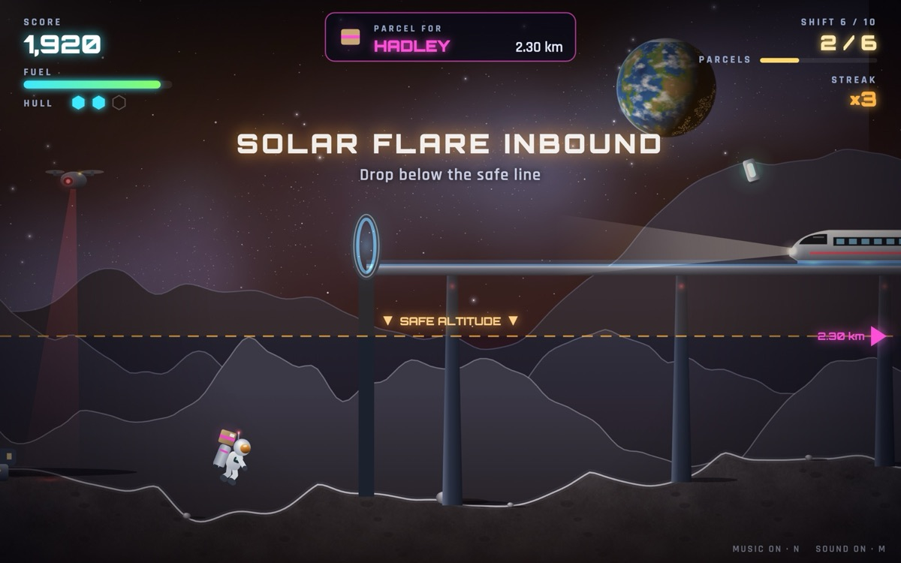
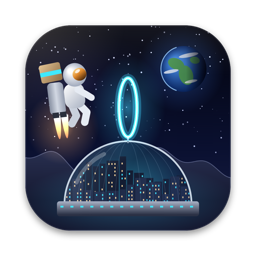

Lunar Courier
iPhone · iPad · Mac · Apple TV
Available now · $2.99, buy once and play on all your devices
The Moon's colonies run on deliveries, and you're the courier. Strap on a jetpack and thread each parcel through the right dome's ring, dodging drones, maglev trains and solar flares.